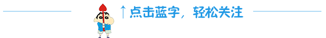

互惠动态
|
|
【双语沟通的第一步——化繁为简】写在“读诗——ASC英语比赛”前端

当第一次苏州某学校校长接见外国友人说出的第一句话是“有朋自远方来，不亦乐乎”时，当时刚从大学毕业做翻译的小编僵了。
其实在所有的外事交流活动中，都不乏这种双方“不按套路出牌”的情况，但静也心来一想，再凭心而论，双方所想要表达的情感都是一样的，并不会因为相较于对方是“外国人”而在“COMMON SENSE（人之常情）”方面有任何的不同。
很多初学英语的人都要求自己要学到可以让自己的中英文表达做到“无缝对接”，但在实际生活当中、甚至在专业翻译领域，这样的期待都是无法实现的。大多数英语初学者都脱不开“中英互换”的泥淖，为了字词的精准对应不惜花大把时间死背词典，但却适得其反说出的话没人听得懂，越挣扎反陷越深。最务实的修习语言目的应该是“可沟通”，然后才是“精而准”。这是一个从“会意”到“会境”的必经之路，没人可以凭空跳过。小编借由三个大家最常遇到的问题说开去，希望大家看过这篇文章，可以开始试着把自己紧张的肌肉放轻松一些，大脑放空一些，不要只听只看，而要去品文字背后的意味。
首先，大家面对的最大问题就是“文化差异”。就如前面提到的那位校长引用的《论语·学而》名句一样，如果我们逐字逐句翻译的话，反而会导致别人完全看不懂，而如果大家放开字句的表面意思，而去感悟其中意味就会发现其实要表达的情感很简单，三个词可以概括：朋友，相见，高兴。由这三个关键词所组成的英文版释译数不胜数，我们可以通过以下句子看出同样意味表达的三种近似境界：
1. How happy we are, To meet friends from far away!
2. It is such a delight to have friends coming from afar；
3. Is it not delightful to have friends come from afar?
看到这里，也许很多人会说：啊？这么简单？中文原有的意境全没了！但小编想说：英语起源之时，孔夫子早已长埋地下千年。之所以孔子精神绵延至今靠的就是一种“化繁为简”“与时代同步”的大义凛然精神。说到这里，小编不禁仰天长叹：这就是人生啊！懂得“割舍”何尝不是一种处世哲学？
其次，“习语俚语”也是我们经常遇到的沟通障碍。歪果仁一句话抛过来，我们可能因完全无法理解而背冒虚汗。事实上完全不必如此，让小编来告诉你解密高招，那就是“听声变位”、“察颜观色”。习语往往非常短、而且以直接表达态度为主。面对面沟通的最大优势就是你可以看到对方的肢体语言和面部表情，结合对方说话时的语气，你绝对可以判断出大概态度倾向――肯定、否定、积极、消极，再结合字面意思去猜大抵可以猜个八九不离十。比如说：
“my fingers crossed”（手指交叉形成十字形状，可以猜出“顺从天意”，既然交给上帝那你就“放心吧”。
“I don't follow you”(当对方锁眉挠头时说出这句话时，你大脑飞速运转，抓住“FOLLOW”跟随，便可猜出对方“跟不上你飞转的脑速”马上要被即刻抛离啦！赶紧把你说过的话再解释一遍吧！
“Why did you sell me out?”（对方面带愠色，一脸不快地说出这句话，“SELL”出售。一下便可猜出对你“把我卖掉”这件事很不满。无辜的你赶紧解释一下“不是我出卖你嗒！”
最后，就是那些人人谈之色变的“专业术语”。对此，小编只有两个字：不难。就如同小孩学步走跳跑三步曲。有了足够的基础英语词汇做铺垫，再攻专业术语便可以举一反三。举个例子你就看明白了。
当你的脑中的词汇量可以轻松理解这些单词的时候：international（国际的）, foreign（国外的）, home（家－>国内的）, free（自由的）, mark（标志）, company（公司）, 只要再加一个词TRADE (贸易)，你便可以重复组合出多个商业术语：
International trade
Foreign trade
Home trade
Free-trade
Trademark
International trademark
Trading company
Foreign trading company
Home trading company
International trading company
所以，术语的学习是建立在日常生活用语积累的基础之上的，而且真正理解起来比前现所说的两类要更加容易，所以有这方面学习计划的大朋友小朋友们大可不必急着一上来就跟它们硬碰硬打一架。“People get into an environment where language can happen, and language learning happens. ”存在语言的地方就存在语言学习，生活是最好的老师，而与外国人一起生活便是7/24不间断的英语生活。
我们的ASC互惠家庭小朋友大朋友们都是幸运的人，成为最早一批引入互惠生到家庭里来的双语家庭先驱，在互惠生的配合下，大家已经开始渐渐适应中英零互换的双语生活。而在理解语言“背后意味”的水平上也有了突飞猛进的发展。接下来请您家里的大朋友小朋友们看一看文章最后的这几句话，只用自己已知的英文单词该如何用解读？相信我，你能行！
接下来请您家里的大朋友小朋友们看一看文章最后的这几句话，只用自己已知的英文单词该如何用解读？相信我，你能行！
这句古诗你会怎样用英文理解？
一寸光阴一寸金，寸金难买寸光阴。
猜俚语意思：
I haven't seen her for donkey's years!
ASC国际互惠生项目公众号ASCCENTER
互惠生最早起源于英、法、德国等自发的青年活动，是指给来自全世界的青年提供一个寄住在他国家庭里体验文化学习语言的机会，如今我们把国外互惠生请来家庭里，照顾自家的孩子，从小培养外文的语言环境，为孩子出国，全家移民打下优良基础，关注个【公众微信号】ASCCENTER了解更多国外有趣资讯。
ASC国际互惠生客服号ASC-CENTER
24小时客服个人微信号，对接家庭与互惠生之间的问题，对互惠生项目有陌生不熟悉或者想了解更多信息的可以关注【个人微信号】ASC-CENTER与客服详细交流。